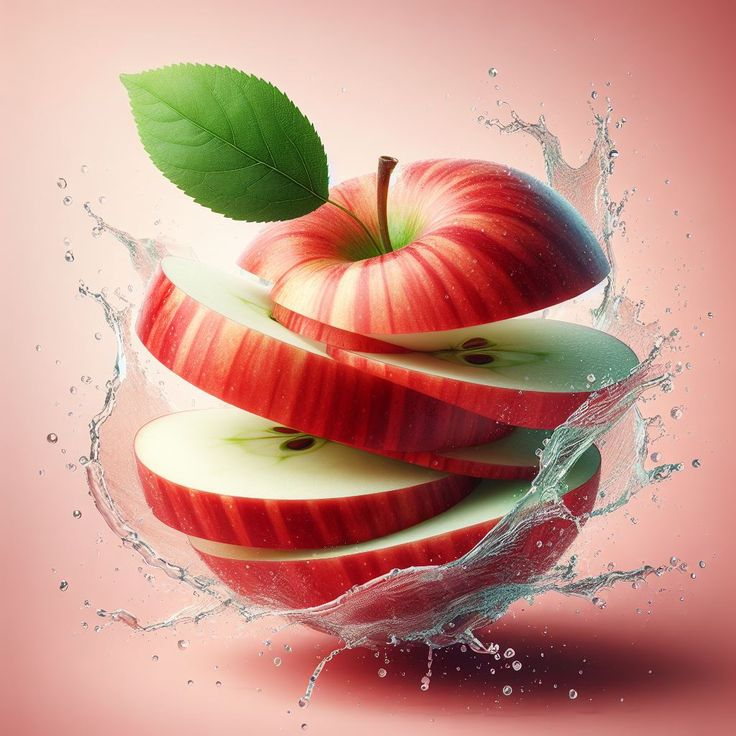
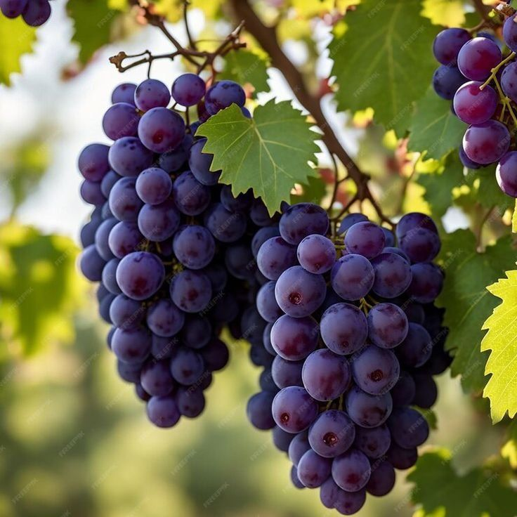
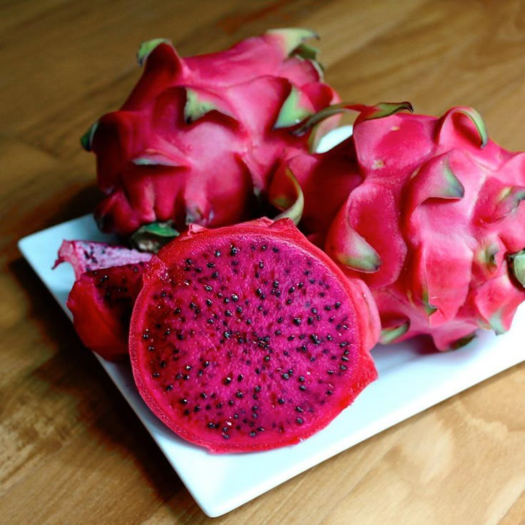
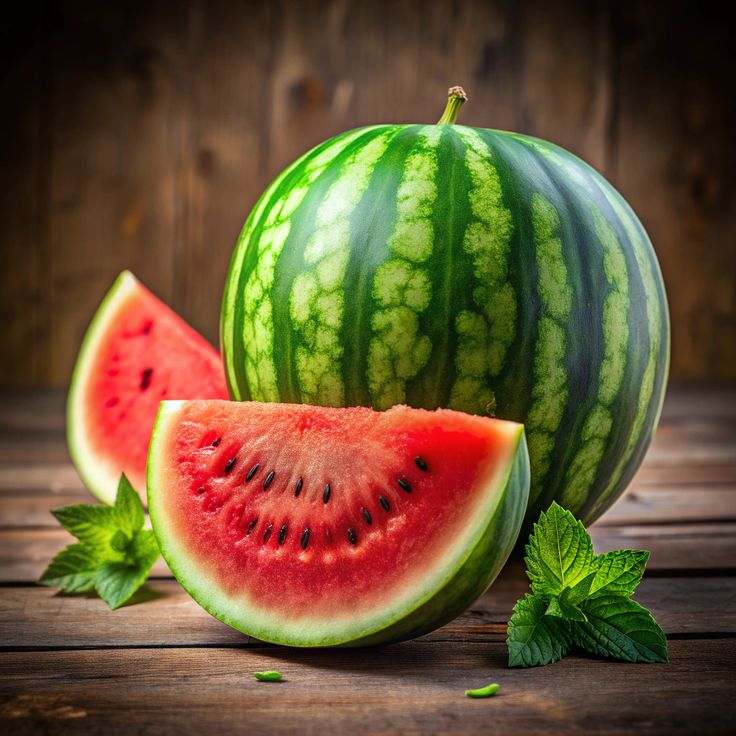

Apples are one of the most widely cultivated and consumed fruits globally. They are a good source of vitamins, fiber, and antioxidants. Apples may help with weight management, heart health, and reducing the risk of diabetes. They can be eaten raw, juiced, or used in various recipes like pies, sauces, and jams. There are thousands of apple varieties, with different colors, sizes, and flavors. Apples are believed to have originated in Central Asia. They are deciduous trees that take several years to produce fruit. This popular saying reflects the perceived health benefits of eating apples regularly. Apples contain a significant amount of air, causing them to float. Apples have appeared in folklore and stories, such as the tale of Adam and Eve.

Grapes are classified as berries because they develop from a single flower with one ovary and have fleshy interiors.There are over 8,000 different grape varieties worldwide, including those used for eating and winemaking.Grapes, especially red and purple varieties, are rich in antioxidants like resveratrol and quercetin, which protect cells from damage.The antioxidants in grapes, particularly resveratrol, may help improve heart health by reducing blood pressure, cholesterol, and preventing blood clots.Studies suggest that compounds in grapes, like resveratrol and quercetin, may have anti-cancer properties.Resveratrol in grapes may help protect brain cells from damage and improve cognitive function.

Dragon fruit has a bright pink or yellow outer skin with green scale-like protrusions, resembling a dragon. The flesh inside is either white or red with tiny black seeds.It has a mildly sweet and slightly earthy flavor, similar to a kiwi or pear.It originates from Central and South America and is now cultivated in various tropical and subtropical regions, including Southeast Asia, the Caribbean, and Southern parts of the US.Dragon fruit is low in calories and a good source of Vitamin C, fiber, magnesium, and antioxidants. It is known to boost the immune system, promote digestive health, aid in weight management, and potentially lower the risk of chronic diseases due to its antioxidant and fiber content.Strawberries are not true berries; they are considered "aggregate accessory fruits".They are an excellent source of vitamin C, and also contain iron and other minerals.Strawberries are known for their sweet, slightly tart flavor and pleasant aroma.They can be eaten fresh, used in desserts like strawberry shortcake, or made into jams, preserves, and other treats. Strawberries are relatively low in calories, making them a healthy addition to any diet. They contain antioxidants that may help reduce the risk of heart disease.Strawberry plants are relatively low-growing, with leaves divided into three parts and white flowers. Strawberries are grown in many regions around the world, with leading producers including the United States and Canada.
Mango is the national fruit of India.It is often referred to as the "King of Fruits" due to its popularity and taste.Mangoes grow on trees in warm, tropical climates.They are a good source of vitamins A and C, and also contain vitamin E, zinc, iron, and calcium.Mangoes can be eaten raw, juiced, blended into smoothies, or used in desserts and savory dishes like pickles and chutneys. Ripe mangoes can be yellow, orange, or a mix of red and yellow, while unripe mangoes are typically green.The flesh of a ripe mango is sweet, juicy, and flavorful.Mangoes are typically in season during the summer months.Mangoes are cultivated in many tropical and subtropical regions around the world.

Watermelon is approximately 92% water, making it a great choice for staying hydrated.It's packed with vitamins A and C, as well as antioxidants like lycopene.Lycopene, found in watermelon, has been linked to reduced risks of certain cancers and heart disease.The high water content and electrolytes like potassium contribute to optimal hydration.Studies suggest that lycopene can help reduce the risk of heart disease and stroke.Lycopene may also play a role in reducing the risk of certain cancers.Vitamin C in watermelon is essential for collagen production, which is important for skin health.Watermelon contains citrulline, an amino acid that may help reduce muscle soreness.